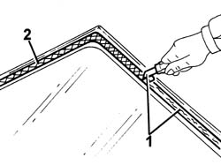

7035A50 windscreen glass clean edges and sand small abrasions
- Path
- Procedures > 70 FITTINGS > 7035 BODYSHELL WINDOWS > 7035A windscreen > 7035A50 windscreen glass clean edges and sand small abrasions
- Kind
- repair procedure (removal / refitting; the operation number is the code)
- Applies to
- all engines; all production periods
- Interactive page
- https://sloeber94.github.io/elrnDB-fDbl/en/#/2585119
Applies to: all engines; all production periods
1. Using a suitable tool, cut and level the bead of sealant on the windscreen so as to reduce its thickness to a minimum without removing it completely.
2. Carefully clean with compressed air the printed area around the edge of the window and thoroughly degrease with heptane.

Applies to: all engines; all production periods
Check that the window is undamaged.
If bonding takes place 60 minutes after the cutting and levelling of the bead of sealant, the surface of the pressed seal must be treated with the special activator and it is necessary to wait for 15 minutes before fixing the glass.
 | Type | Component | Name | Qty. |
|---|---|---|---|---|
- | PRIMER | WINDSCREEN GLASS SEALING STRIP | - | - |